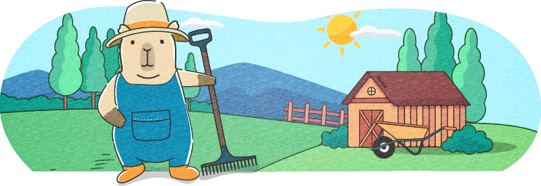

디자인에 대하여

디자인에 대한 나의 생각
디자인이란 시각적인 요소들을 통해 사람들의 이해를 돕는 수단이라고 생각합니다.
독일의 산업디자이너 디터람스는 "좋은 디자인은 제품의 이해를 돕는다"고 하였습니다
이 말처럼 디자인은 무언가를 이해할 수 있도록 돕고 또한 좋은 디자인은 설명이 필요없다고 생각합니다

디자인에서 중요한 것
디자인에서 중요한 것은 사용자 관점에서 생각하고 그에 맞는 의도를 담는 것입니다.
디자인은 사용자를 위해 존재하는 것이고 평가 또한 사용자가 내리는 것이기 떄문에 사용자의 관점에서 생각하는 것이 중요하다고 생각합니다.
또 디자인은 아름다운 겉모습 뿐만 아니라 디자이너의 명확한 의도가 담겨있어야 합니다.
디자인을 만드는 디테일
사용자가 별도의 설명 없이도 제품을 이해할 수 있게 하려면, 디자이너는 보이지 않는 곳에서 여러가지 변수를 고려해야 한다고 생각합니다.
선의 굵기나 버튼의 위치 하나의 차이가 사용자의 경험을 결정짓는다는 마음으로 가장 쉽고 친절한 언어를 시각적으로 구현하기위해 끊임없이 고민해야 합니다.
18:30~ 목욕과 취침
느긋하게 목욕을 하고 잠자리에 듭니다. 이불 속은 천국입니다.